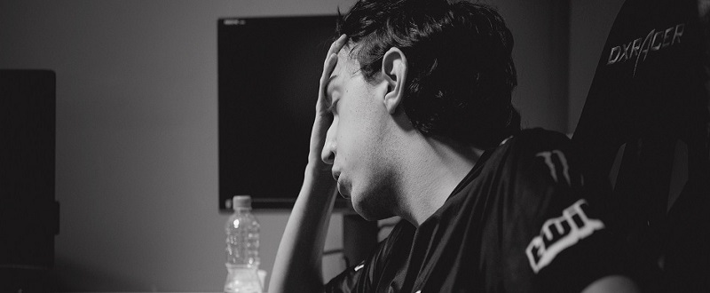

O atual CEO da paiN Gaming, Renan Philip, conversou com o Mais e-Sports a pós a derrota para a RED Canids Corinthians que decretou o rebaixamento da equipe. Confira:
Philip: Isso vai fazer parte de um processo de repensar tudo que fizemos. Não temos realmente a resposta para isso. Se a gente tivesse, teríamos executado durante o split. Tentamos muitas coisas diferentes. Na Superliga não fomos tão bem, então, no começo desse ano tentamos implementar uma comissão técnica mais robusta. Tentamos mudanças no jeito em que eles jogavam e acabou não funcionando. Agora serão duas semanas de muita reflexão, muito planejamento de volta para entender bem onde erramos. Tanto nessa construção como nos anos passados também, para que possamos agir em volta disso e acertar.
Philip: Nós com certeza iremos jogar o Circuito Desafiante, mas com essa equipe ou não, com essa comissão técnica ou não, com essa estrutura que temos hoje ou não. Não é uma resposta que eu posso dar agora porque é parte desse processo também. A gente reflete, temos um certo tempo até chegar a hora decisiva para começar a se movimentar. Então, começamos a refletir o que fizemos de errado, onde erramos. Com certeza foram muitos erros em planejamento, execução e filosofia. Mas aí sim teremos essas respostas, pelo menos entendendo mais onde nós erramos para replanejar e entender. Seja jogador, comissão técnica ou no modelo de gestão que aplicamos.
Philip: Não. A paiN continua sendo o maior clube da América Latina com a maior torcida do Brasil e vai continuar sendo assim mesmo sendo rebaixados. Não é um rival ou algo assim que vai doer mais. O fato de ser rebaixado poderia ter sido para um time do chile que seria tão impactante quanto. Tanto para nós quanto para a nossa torcida. O que importa para nós nesse caso é o quão triste o nosso torcedor fica nesse momento. Nós também ficamos muito abalados por aqui. Mas a reconstrução toda tem que acontecer pois precisamos fazer a nossa torcida ganhar o que merece.
Philip: Quero agradecer muito a todos pelo apoio nesse split. Estamos no pior momento da nossa história no LOL. Nós só temos realmente a agradecer e pedir desculpa pelo resultado que tivemos aqui e prometer que vamos nos reconstruir e trazer a paiN tão forte como sempre foi.
Fonte